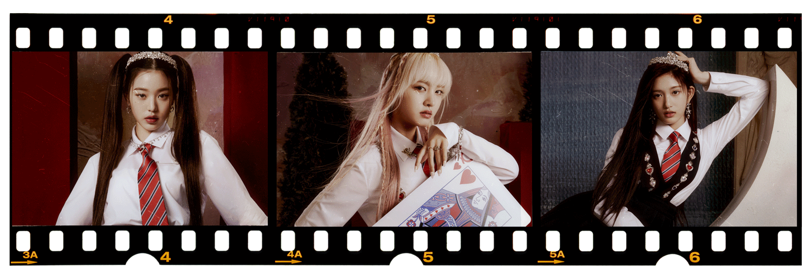

JUNE 23 2022
It is three days until global super rookies IVE will head to Frankfurt, Germany, to perform in front of 65,000 K-pop fans at the KPOP.FLEX festival and their nerves can be felt through the Zoom screen. The members are visibly jittery, subconsciously biting their nails and covering their bare faces with the long sleeves of the comfy hoodies they are bundled up in. They might not be wearing any makeup, but the glimmer in their eyes makes IVE shine. Nerves notwithstanding, this is the group that has splashed into the K-pop scene with hit after hit, crafting a sound and personality all their own in just seven months since their debut in late 2021.
Starship Entertainments newest girl group has become a fixture in K-pop. Everything IVE touch seems to turn to gold, Their debut single Eleven, which the members describe as addictive, has racked up records as quickly as it has amassed views. Their sophomore title track Love Dive, released in April, has also since become as omnipresent as its predecessor. Even Dear Cupid, a short sound snippet used to promote the release of Love Dive, has achieved virality on TikTok, with over 300,000 videos using the sound. Looking back, Gaeul, Rei, Wonyoung, Liz, Leeseo, and IVEs leader Yujin seem reticent to admit they have found a recipe for success, but they sure are taking it all in stride.
For a substantial majority of fourth-generation idols, whose debut has been marked by a global pandemic, offline concerts have been but a dream. These past two years, the prospect of meeting fans in real life seemed far-fetched, but thanks to higher vaccination rates and borders opening back up, IVE was able to have their international live debut fairly quickly, something they do not take for granted. It's good to hear the cheers and feel the energy in person, Gaeul says in English, beaming with anticipation before heading to Germany. The excitement was even more palpable in a vlog they uploaded to their YouTube channel, which shows the members packing their essentials for the trip and fantasizing about what to come.
They took that energy and happiness and channeled it into their day two performance, looking glaringly more confident on stage during the festivals second date. On the first day, the thought of performing in front of hundreds and thousands of people made me nervous as I was preparing backstage, Rei admits. As I monitored the day one performance, I realized that I should try to have more fun with the audience. So on day two, I went up on the stage way more relaxed than the previous day. I cannot forget the electrifying feeling I got after our performance was over.
The epitome of short but sweet, KPOP.FLEX was IVE first hurrah on international soil, but it will not be the last. e came back to Korea the day after the concert ended, Leesoo says, lamenting the lack of free time to explore Germany lake parks or try the world-renowned Schweinshaxen, as she describes it. Tourism will probably have to wait even more, because the group is showing no signs of stopping.
Since their debut, IVE members have made a name for themselves with their chic and modern style, as Wonyoung describes it, with a bite. The way the six members present themselves on stage and on social media exudes confidence. They move like natural-born performers, so its only fair to assume they all had a penchant for entertainment since childhood — but that is not the case for every single member.
Explaining how they all ended up pursuing a career in entertainment, most members share that they were indeed drawn in by senior idols, whose performances they would watch on TV growing up. For Liz and Rei, music was the main attraction. For Gaeul and Yujin, it was the dances and performances. For Wonyoung, it was the shining lights. (She was finally cast by Starship at her sister's graduation and calls it destiny.) Leeseo, however, shares that she only really developed her passion after she got scouted by Starship staff, though she is now immensely thankful for the opportunity.
Regardless of what is led them here, it is undeniable that all members of IVE have a certain something that makes them stand out. It is in their name, after all. Though the apostrophe is long gone for stylistic purposes, the group name is an abbreviation of 'I Have,' as shared by the members during the first episode of 1,2,3 IVE. (They also 'showed what they have' with individual intro videos posted on their YouTube channel prior to debut.)
Speaking of their fellow members, IVE have nothing but compliments for each other. Liz describes Gaeul as someone who is very calm and has a very wide open heart, which she believes allows her to take care of the members very well. In turn, Gaeul praises Wonyoung for her 'very impressive facial expressions on stage,'' which she highlights as one of the traits that she would like to learn from her. Wonyoung thinks Rei has many 'unique charms,' including 'a strong image on stage' but cute and attractive attributes when she is off the stage.
Rei, on the other hand, says that Yujin has great charisma and shares that as a leader, she takes care of the members very well and looks after them always.' Though still visibly flustered, Yujin doesn't hesitate to say Leeseo, IVE youngest, is the group's ball of light, sharing that they all receive “lots of positive and bright energy from her.' Last but not least, Leeseo exalts Liz for her awesome and really positive energy that makes everyone around her lively.

Looking at their performances, it's easy to forget that IVE's median age is 17. (Gaeul, who will be turning 20 in September is the oldest, while Leeseo, currently 15, is the group's maknae.) Their youth does show in conversation, however. They giggle among themselves between questions and hesitate, draw blanks, and look out for other members' approval when deviating off script. But it's that mix of seasoned confidence (coming mainly from former IZ*ONE members Yujin and Wonyoung, who do much of the talking during our interview) and naiveté that makes IVE so exciting. Keywords IVE KPOP
'I think our confidence is the strength of our group,' Yujin says. 'These days, there are lots of awesome groups that have debuted right after us, and we're really happy in enjoying it because they motivate us to make more, greater performances.'' She adds that having already received labels such as 'global super rookie group' is an honor for the six-piece act. 'We love to hear that,' she proclaims with a smile. Wonyoung adds, 'We are really going to try hard so that no one can deny that label for us.'
Those efforts are currently being reflected in extremely busy schedules, much like the whirlwind that was KPOP.FLEX. 'We are living together and Leeseo and I actually go to school [still] so we are students,' Wonyoung shares in English. 'So before the schedules, if we can, we go to school and then go back to our schedules. We're pretty much having a busy life these days.'
2022 is shaping up to be a busy year for IVE, 'We are planning lots of promotions as IVE so stay tuned,'' Yujin says, but the sextet is already looking forward to the future, too. The members share that they would like to become world-renowned artists and show a much more mature and improved side to them. They also want to try their hand at more songwriting and music production, if given the chance by their company, and agree that any opportunity they get to meet DIVEs, they'll take. World tours are high on the priority list for all six, and Rei is especially keen on performing in Japan, her home country.
Let us slide into your DMs. Sign up for the Teen Vogue daily email.
Want more from Teen Vogue? Check this out: All The Moments You Missed from KPOP.FLEX, Europe's First Mega K-Pop Fest
READ MORE